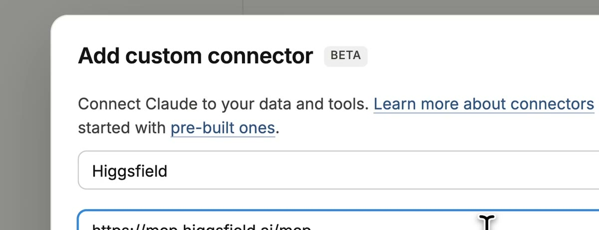
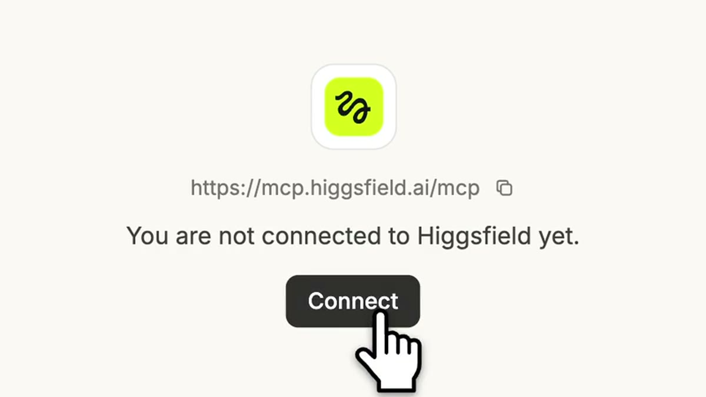
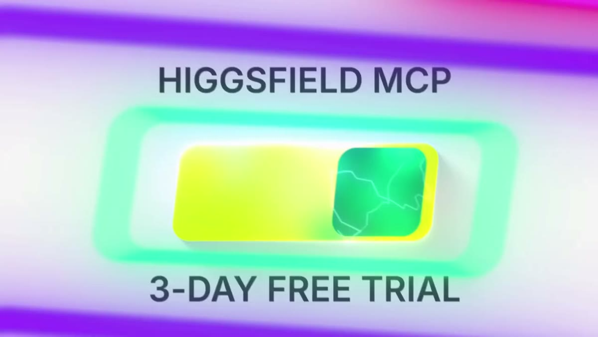
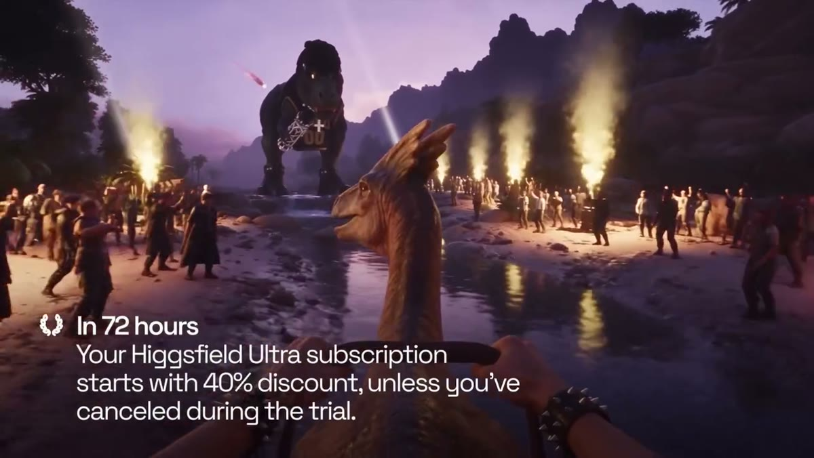

AI 영상 모델 전부
3일 동안 공짜
Claude의 새 모델 Fable 5.2 출시 기념으로, 힉스필드(Higgsfield)가 MCP 신규 사용자에게 72시간 동안 영상 · 이미지 · 오디오 상위 모델을 무제한으로 열었어요. Claude에 커넥터 하나만 추가하면, 대화로 "영상 만들어 줘"가 돼요. 대신 72시간 뒤에는 자동으로 유료 요금제로 넘어가니, 해지 날짜까지 같이 챙기세요.
01무엇이 열렸나
- 시작: 2026-11-10 새벽(한국 시간). 힉스필드 공지는 "Limited offer"라고만 했고 끝나는 날은 아직 없어요.
- 대상: 힉스필드 MCP 신규 사용자.
- 열리는 것: 힉스필드 MCP 안의 상위 영상 · 이미지 · 오디오 모델(Seedance · Kling · GPT Image · Nano Banana 등).
- Claude 요금제는 따로예요. Fable 5.2는 Claude 유료 요금제에서 고를 수 있어요.
- 힉스필드가 체험이 끝나기 전에 알림 메일을 보내 준다고 했어요.
02받는 법 3단계
Claude에 커넥터 추가
Claude 설정 → 커넥터 → 사용자 지정 커넥터 추가

준비물: Claude 계정(브라우저 claude.ai), 힉스필드 계정
이름 칸 👇
Higgsfield주소 칸(Remote MCP server URL) 👇
https://mcp.higgsfield.ai/mcp✅ 받는 결과: 커넥터 목록에 Higgsfield가 생겨요.
Connect 누르고 로그인
"You are not connected to Higgsfield yet." 아래 Connect를 눌러요.

힉스필드 창이 열리면 로그인하고 Continue를 눌러요.
✅ 받는 결과: Higgsfield 옆에 초록색 Connected가 떠요.
3일 무료 체험 켜기
연결과 체험 켜기는 따로예요.

같은 힉스필드 계정으로 higgsfield.ai/mcp에 로그인해서 체험을 시작해요. Claude 대화 중에 체험 안내가 뜨면 거기서 켜도 돼요.
✅ 받는 결과: 72시간 동안 크레딧 걱정 없이 생성.
⚠️ 체험을 켤 때 결제 수단 등록을 요구할 수 있어요(7월 체험 때는 카드 등록이 필요했어요). 켠 시각을 캘린더에 바로 적어 두세요.
03처음 써 볼 요청문
Claude 새 대화에 그대로 붙여 넣고 [ ] 칸만 바꿔요. 한 번에 하나씩 요청하세요.
힉스필드로 [우리 제품, 예: 꿀 앰플]의 8초짜리 세로 광고 영상을 만들어 줘. 첫 장면은 제품이 화면 가운데로 천천히 돌면서 들어오고, 마지막 장면은 제품 위에 빛이 스치면서 멈춰. 깔끔한 흰 스튜디오, 고급스러운 느낌으로.
힉스필드로 [장소, 예: 눈 덮인 산속 기차 창가]에서 찍은 것 같은 8초짜리 세로 브이로그 영상을 만들어 줘. 손으로 폰을 든 것처럼 살짝 흔들리고, 해 질 녘 빛으로.
힉스필드로 20대 여성이 [제품]을 손에 들고 써 보는 폰으로 찍은 듯한 8초짜리 세로 리뷰 영상을 만들어 줘. 자연광, 보정 없는 피부, 자연스러운 표정으로.
04자동 결제 전에 해지하는 법

I want to cancel the trial
- 웹에서는 힉스필드 로그인 → Manage Account → Subscription → Cancel auto-renewal.
- 힉스필드 안내로는 해지해도 남은 체험 시간은 줄지 않아요. 그래서 체험을 켜자마자 자동 갱신부터 꺼 두는 게 안전해요.
- 위 해지 방법은 지난 7월 체험 때 공식 안내 기준이에요. 메뉴 이름이 바뀌었을 수 있어요.
05막혔을 때
Connect를 눌러도 체험이 안 켜져요.
여러 개를 한 번에 시키니 업그레이드하라고 떠요.
예전에 힉스필드를 써 봤어요. 저도 되나요?
폰 Claude 앱에서도 되나요?
06출처
- @higgsfield.ai 공식 릴스(2026-11-09) · (2026-11-10) — 영상 속 화면 출처
- Higgsfield X 공지 · 72시간 체험 조건
- higgsfield.ai/mcp 연결 튜토리얼 · 7월 MCP 체험 안내(해지 방법)
- 2026-11-12 확인
대행사에서 AI 교육하는 현직 마케터가 정리해요.
인스타에서 팔로우